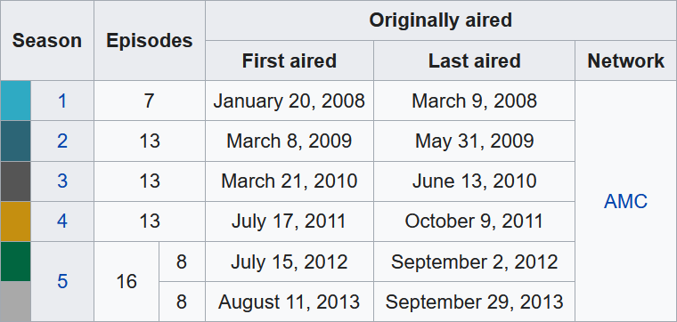

library(tidyverse)
season <- c(1, 2, 3, 4, 5)
episodes <- c(7, 13, 13, 13, 16)
first_air <- c(2008, 2009, 2010, 2011, 2012)
last_air <- c(2008, 2009, 2010, 2011, 2013)
network <- "AMC"
breaking_bad <-
tibble(season, episodes, first_air, last_air, network)
breaking_bad
## # A tibble: 5 × 5
## season episodes first_air last_air network
## <dbl> <dbl> <dbl> <dbl> <chr>
## 1 1 7 2008 2008 AMC
## 2 2 13 2009 2009 AMC
## 3 3 13 2010 2010 AMC
## 4 4 13 2011 2011 AMC
## 5 5 16 2012 2013 AMCWeek 04: Wrangle
CautionWork in Progress
This page is still under development.
[04a] Tidy Data / Data Files
Topics
- Learn the principles of data storage and the tidy data format
- Read data from and write data to comma-separated values files
File Downloads
Readings
- R4DS (2E) Section 1.2.1: The penguins data frame
- R4DS (2E) Section 5.1: Data tidying - Introduction
- R4DS (2E) Section 5.2: Tidy data
- R4DS (2E) Section 7.2: Reading data from a file
- R4DS (2E) Section 7.5: Writing to a file
Slides
*Note that you can click the three-line (hamburger) icon on the bottom-left of the slides to access a navigation menu. You can click inside the slides region and then press ‘F’ on your keyboard to view the slides full screen.
Practice
1) Tidy Data
The following table summarizes the season information for the eight seasons of AMC’s Breaking Bad show.
Tidy up this data and save it to a tibble. Decide for yourself how to handle season 5 (should it be a single observation or two?). For the first and last aired dates, just store the year as a number.
Save the tibble you created to a CSV file in your Project folder named “breaking_bad.csv”.

Answer key
Version with one observation for the season five partsVersion with two separate observations for the season five parts
library(tidyverse) season <- c(1, 2, 3, 4, 5.1, 5.2) episodes <- c(7, 13, 13, 13, 8, 8) first_air <- c(2008, 2009, 2010, 2011, 2012, 2013) last_air <- c(2008, 2009, 2010, 2011, 2012, 2013) network <- "AMC" breaking_bad <- tibble(season, episodes, first_air, last_air, network) breaking_bad ## # A tibble: 6 × 5 ## season episodes first_air last_air network ## <dbl> <dbl> <dbl> <dbl> <chr> ## 1 1 7 2008 2008 AMC ## 2 2 13 2009 2009 AMC ## 3 3 13 2010 2010 AMC ## 4 4 13 2011 2011 AMC ## 5 5.1 8 2012 2012 AMC ## 6 5.2 8 2013 2013 AMCPart (b)
write_csv(breaking_bad, "breaking_bad.csv")
2) Data Files
Click the link to download the cereal.csv file and save it to your class Project folder.
Use {tidyverse} to import this file into R as a tibble named
cereal. Then print it.Use an R command to preview the data “at a glance.” How many variables and observations are in this tibble?
Answer key
Part (b)
cereal <- read_csv("cereal.csv") cereal ## # A tibble: 77 × 8 ## name mfr type calories sodium carbo sugars rating ## <chr> <chr> <chr> <dbl> <dbl> <dbl> <dbl> <chr> ## 1 100% Bran Nabisco cold 70 130 5 6 68.40… ## 2 100% Natural Bran Quaker O… cold 120 15 8 8 33.98… ## 3 All-Bran Kelloggs cold 70 260 7 5 59.42… ## 4 All-Bran with Extra Fiber Kelloggs cold 50 140 8 0 93.70… ## 5 Almond Delight Ralston … cold 110 200 14 8 34.38… ## 6 Apple Cinnamon Cheerios General … cold 110 180 10.5 10 29.50… ## 7 Apple Jacks Kelloggs cold 110 125 11 14 33.17… ## 8 Basic 4 General … cold 130 210 18 8 37.03… ## 9 Bran Chex Ralston … cold 90 200 15 6 49.12… ## 10 Bran Flakes Post cold 90 210 13 5 53.31… ## # ℹ 67 more rowsPart (c)
glimpse(cereal) ## Rows: 77 ## Columns: 8 ## $ name <chr> "100% Bran", "100% Natural Bran", "All-Bran", "All-Bran with … ## $ mfr <chr> "Nabisco", "Quaker Oats", "Kelloggs", "Kelloggs", "Ralston Pu… ## $ type <chr> "cold", "cold", "cold", "cold", "cold", "cold", "cold", "cold… ## $ calories <dbl> 70, 120, 70, 50, 110, 110, 110, 130, 90, 90, 120, 110, 120, 1… ## $ sodium <dbl> 130, 15, 260, 140, 200, 180, 125, 210, 200, 210, 220, 290, 21… ## $ carbo <dbl> 5.0, 8.0, 7.0, 8.0, 14.0, 10.5, 11.0, 18.0, 15.0, 13.0, 12.0,… ## $ sugars <dbl> 6, 8, 5, 0, 8, 10, 14, 8, 6, 5, 12, 1, 9, 7, 13, 3, 2, 12, 13… ## $ rating <chr> "68.402973", "33.983679", "59.425505", "93.704912", "34.38484…77 observations (rows) and 8 variables (columns)
[04b] Rows / Columns
Topics
- Transform data by row using
arrange(),filter(), anddistinct() - Transform data by column using
mutate(),select(),rename(), andrelocate()
Readings
- R4DS (2E) Section 3.1: Data Transformation - Introduction
- R4DS (2E) Section 3.2: Data Transformation - Rows
- R4DS (2E) Section 3.3: Data Transformation - Columns
Slides
*Note that you can click the three-line (hamburger) icon on the bottom-left of the slides to access a navigation menu. You can click inside the slides region and then press ‘F’ on your keyboard to view the slides full screen.
Practice
For both sets of questions, load and use the storms dataset from the dplyr package. Because changes are only saved when using assignment, be sure to use the <- in each line. Then print the final result.
1) Rows
Filter the
stormsdataset to show only the observations from the year 2005. Sort the result by pressure from lowest to highest (ascending) to see the most intense observations first.Use
distinct()to find the unique names of all storms in the dataset that have ever reached category 5.
Answer key
Part (a)
library(tidyverse) data("storms", package = "dplyr") storms_2005 <- filter(storms, year == 2005) storms_2005 <- arrange(storms_2005, pressure) storms_2005 ## # A tibble: 873 × 13 ## name year month day hour lat long status category wind pressure ## <chr> <dbl> <dbl> <int> <dbl> <dbl> <dbl> <fct> <dbl> <int> <int> ## 1 Wilma 2005 10 19 12 17.3 -82.8 hurricane 5 160 882 ## 2 Wilma 2005 10 19 6 17 -82.2 hurricane 5 150 892 ## 3 Wilma 2005 10 19 18 17.4 -83.4 hurricane 5 140 892 ## 4 Wilma 2005 10 20 0 17.9 -84 hurricane 4 135 892 ## 5 Rita 2005 9 22 3 24.7 -87.3 hurricane 5 155 895 ## 6 Rita 2005 9 22 0 24.5 -86.9 hurricane 5 150 897 ## 7 Rita 2005 9 22 6 24.8 -87.6 hurricane 5 155 897 ## 8 Wilma 2005 10 20 6 18.1 -84.7 hurricane 4 130 901 ## 9 Katrina 2005 8 28 18 26.3 -88.6 hurricane 5 150 902 ## 10 Katrina 2005 8 29 0 27.2 -89.2 hurricane 5 140 905 ## # ℹ 863 more rows ## # ℹ 2 more variables: tropicalstorm_force_diameter <int>, ## # hurricane_force_diameter <int>Part (b)
storms_cat5 <- filter(storms, category == 5) storms_cat5 <- distinct(storms_cat5, name) storms_cat5 ## # A tibble: 25 × 1 ## name ## <chr> ## 1 Anita ## 2 David ## 3 Allen ## 4 Gilbert ## 5 Hugo ## 6 Andrew ## 7 Mitch ## 8 Isabel ## 9 Ivan ## 10 Emily ## # ℹ 15 more rows
2) Columns
Create a subset of the
stormsdataset that contains only the name, year, and wind variables. Then, rename the wind column to max_wind_knots.Create a new column called wind_mph (wind * 1.15). Then, relocate this new column to appear immediately before the pressure column.
Answer key
Part (a)
storms_knots <- select(storms, name, year, wind) storms_knots <- rename(storms_knots, max_wind_knots = wind) storms_knots ## # A tibble: 20,778 × 3 ## name year max_wind_knots ## <chr> <dbl> <int> ## 1 Amy 1975 25 ## 2 Amy 1975 25 ## 3 Amy 1975 25 ## 4 Amy 1975 25 ## 5 Amy 1975 25 ## 6 Amy 1975 25 ## 7 Amy 1975 25 ## 8 Amy 1975 30 ## 9 Amy 1975 35 ## 10 Amy 1975 40 ## # ℹ 20,768 more rowsPart (b)
storms_mph <- mutate(storms, wind_mph = wind * 1.15) storms_mph <- relocate(storms_mph, wind_mph, .before = pressure) storms_mph ## # A tibble: 20,778 × 14 ## name year month day hour lat long status category wind wind_mph ## <chr> <dbl> <dbl> <int> <dbl> <dbl> <dbl> <fct> <dbl> <int> <dbl> ## 1 Amy 1975 6 27 0 27.5 -79 tropical d… NA 25 28.7 ## 2 Amy 1975 6 27 6 28.5 -79 tropical d… NA 25 28.7 ## 3 Amy 1975 6 27 12 29.5 -79 tropical d… NA 25 28.7 ## 4 Amy 1975 6 27 18 30.5 -79 tropical d… NA 25 28.7 ## 5 Amy 1975 6 28 0 31.5 -78.8 tropical d… NA 25 28.7 ## 6 Amy 1975 6 28 6 32.4 -78.7 tropical d… NA 25 28.7 ## 7 Amy 1975 6 28 12 33.3 -78 tropical d… NA 25 28.7 ## 8 Amy 1975 6 28 18 34 -77 tropical d… NA 30 34.5 ## 9 Amy 1975 6 29 0 34.4 -75.8 tropical s… NA 35 40.2 ## 10 Amy 1975 6 29 6 34 -74.8 tropical s… NA 40 46 ## # ℹ 20,768 more rows ## # ℹ 3 more variables: pressure <int>, tropicalstorm_force_diameter <int>, ## # hurricane_force_diameter <int>
[04c] Pipes / Pipelines
Topics
- Use the pipe (
|>) to efficiently pass an object to a function - Build a pipeline by connecting multiple pipes together
Readings
- R4DS (2E) Section 3.1.3: dplyr basics
- R4DS (2E) Section 3.4: The pipe
Slides
*Note that you can click the three-line (hamburger) icon on the bottom-left of the slides to access a navigation menu. You can click inside the slides region and then press ‘F’ on your keyboard to view the slides full screen.
Practice
1) Pipes
Q
Answer key
A
2) Pipelines
Q
Answer key
A